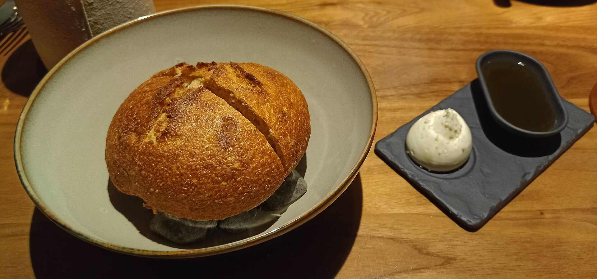

Chapter 05
Making the bottle is the easy half. Getting it into someone's kitchen — profitably — is the business. The big distributors will take most of your margin; the trick is to earn as much as you can before you ever need them.
Every bottle reaches a buyer through one of a handful of routes, and they trade off reach against margin. A small brand usually starts at the high-margin, low-reach end and climbs.
| Channel | Reach | Margin to you | Notes |
|---|---|---|---|
| Farmers' markets | Low | Highest | Face-to-face, instant feedback, full retail price in your pocket. |
| On-site tasting room | Low–med | Highest | Refill-by-the-ounce + paid tastings/classes. Store margins ~10–30% 1. |
| DTC e-commerce (Shopify) | Medium | High | DTC food brands run 15–30% higher margins than retail-led ones 2. |
| Specialty / gourmet shops, co-ops | Medium | Medium | Often direct or via a broker; the natural home for a premium local oil. |
| Regional distributors (Baldor, UNFI, KeHE) | High | Lower | Scale — at the cost of fees and margin (below). |
| Amazon / national e-comm | High | Lower | Reach without shelf negotiation, but crowded and fee-heavy. |
| Food service / restaurants | Medium | Medium | Chefs value freshness & story; a Northeast route via Baldor 3. |
Two distributors, UNFI and KeHE, effectively gate national natural/specialty retail. They impose minimum volumes, onboarding fees, and operational requirements that are real barriers under roughly $1M in revenue, and onboarding typically takes 6–12 months 4.
On top of slotting, expect broker commissions (~5–10% of gross), off-invoice allowances (KeHE takes a minimum 15% on new items), plus charge-backs, new-item setup fees, and spoilage allowances 45. At big national banners a single SKU's authorization can run into the thousands.
Because the middle of the chain is so expensive, the single most important financial move for a small olive-oil brand is to sell as much as possible directly. Industry guidance suggests aiming for 40–60% of volume through direct channels — farmers' markets, a tasting room, and DTC e-commerce — to protect profitability 2.
A proven small format: refillable bottles sold by the ounce from stainless "fusti," paid tastings and classes (the highest-margin thing you can sell), and adjacencies — balsamics, salts, cheese, soap 1. The Hudson Valley already supports several such shops 6.
Quarterly ships, gift sets, "adopt-a-tree" style programs, and tasting events build loyalty and predictable revenue — and turn customers into storytellers.

Being in Upstate New York is a genuine asset for distribution, not just branding:
The New York International Olive Oil Competition is the world's largest and most respected quality contest; buyers and chefs use its results as a buying guide, and medals disproportionately lift small family producers. In 2025 it awarded 742 oils 7. A tangible, ownable credibility asset.
Stamping a harvest date and emphasizing recency directly counters the "rancid supermarket oil" perception — and justifies your premium 8.
Named source, single-varietal, land stewardship — the Séka Hills and McEvoy playbook. A local Upstate identity differentiates even when the oil is sourced from California; just represent sourcing honestly 9.
Graza's squeeze bottles and a clear "cook vs. finish" use-case broke through a crowded category. A sharp, simple usage idea can matter as much as the oil 10.
All links accessed 2026-07-23. Fee ranges and channel economics vary by retailer and category — treat as directional.